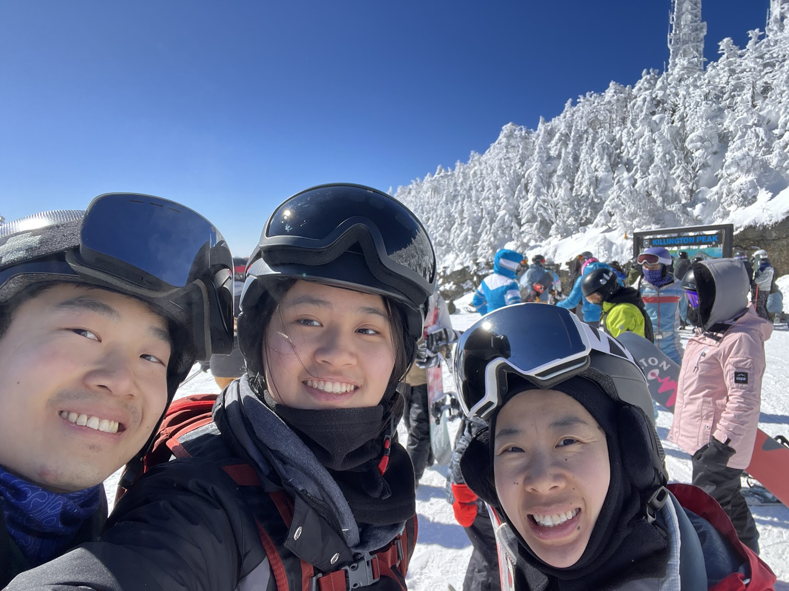

Welcome to my portfolio website!
I'm Jessica Ding, a fourth year (out of five) majoring in mechanical engineering at Northeastern
University.
My decision to become an engineer stems from my interest in math and physics in high school. Having done
two co-ops, I have gained valuable skills in documentation, working with a team, and generally being
comfortable in an engineering work environment.
My most recent co-op was at BAE Systems where I was a Manufacturing Engineering intern. During my
time there, I worked mostly with the process engineers in the Electronic Warfare Integration
Manufacturing Center (EWIMC), learning about the factory,
shadowing manufacturing procedures, and assisting in a few projects myself. I helped retire discontinued
materials from the company database, wrote work instructions to implement new techniques, and created
laser-cut and 3D printed fixtures to aid in the manufacturing process.
My favorite aspect of this job was the fabrication and having the opportunity to freely make design
choices and experiment with the laser cutter.

Outside of school and work, I enjoy art, music, and staying active. My favorite art mediums are digital
and graphite. I am a pretty avid violist. In high school. I played viola in the Boston Youth Symphony
and Boston Philharmonic Youth Orchestra.
In college, I've performed in a chamber group and as first stand violist in the NU symphony orchestra.
Lately, I've been most into knitting, inline skating, skiing/snowboarding, and riding my longboard
poorly around the city.
You can find some of my artwork in the gallery section and
recordings from my orchestral performances in the music tab. My
contact information is at the bottom of every page. Thank
you for stopping by!